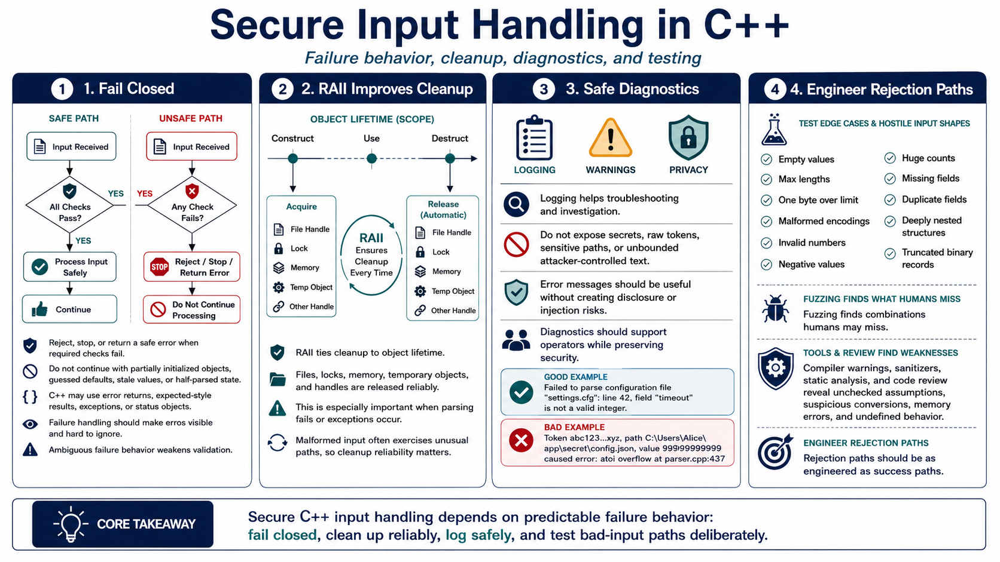

Defensive Error Handling, Testing, and Tooling
Connecting to LMS... Progress: in progress

Narration
Secure input handling depends on failure behavior. Fail closed means the program rejects, stops, or returns a safe error when required checks fail. It does not continue with partially initialized objects, guessed defaults, stale values, or half-parsed state. C++ programs may use error returns, expected-style results, exceptions, or status objects, but the design should make failures visible and hard to ignore. Ambiguous failure handling is where many validation checks quietly lose their value.
RAII helps defensive code by tying resource cleanup to object lifetime. Files, locks, memory, temporary objects, and handles can be released reliably when a parse fails or an exception is thrown. Cleanup reliability matters because malformed input often exercises unusual paths. Logging is useful, but logs should not expose secrets, raw tokens, sensitive paths, or unbounded attacker-controlled text. Error messages should help troubleshooting without turning diagnostics into another disclosure or injection problem.
Testing should include edge cases and hostile shapes of input: empty values, maximum lengths, one byte over the limit, malformed encodings, invalid numbers, negative values, huge counts, missing fields, duplicate fields, deeply nested structures, and truncated binary records. Fuzzing can discover combinations humans would not write by hand. Compiler warnings, sanitizers, static analysis, and code review add more coverage by surfacing memory errors, undefined behavior, suspicious conversions, and unchecked assumptions. The goal is to prove that rejection paths are as engineered as success paths.